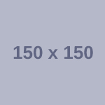
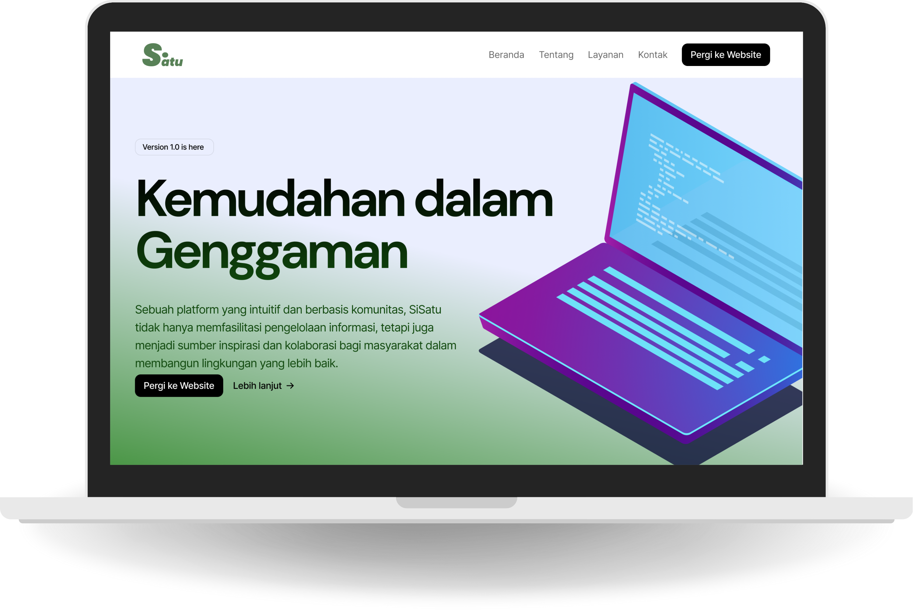
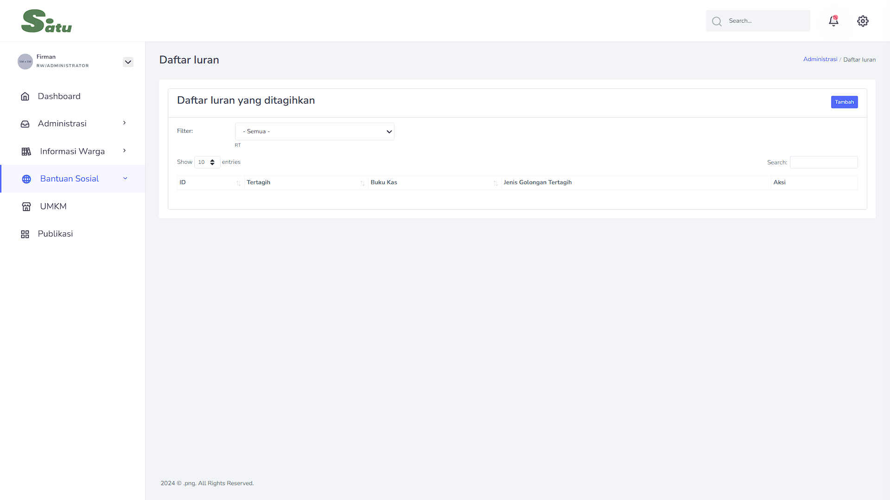
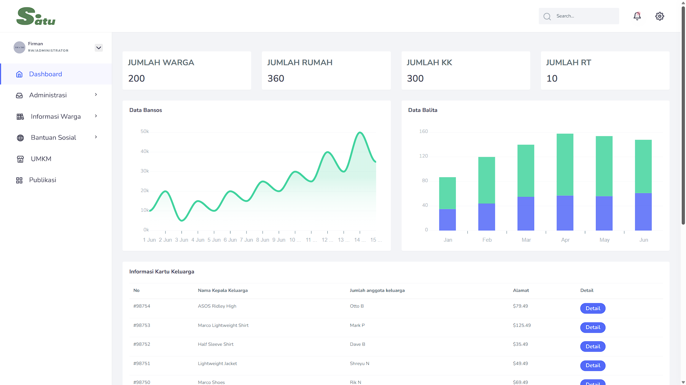
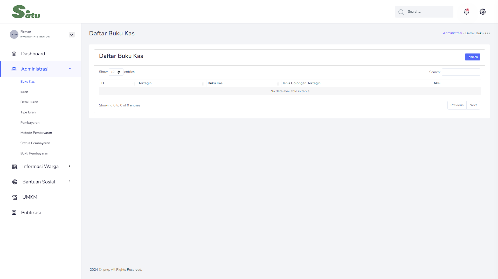
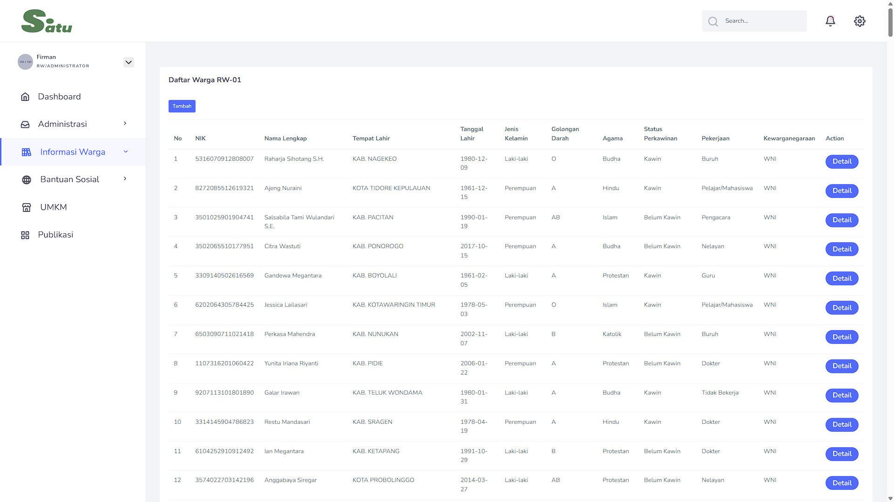
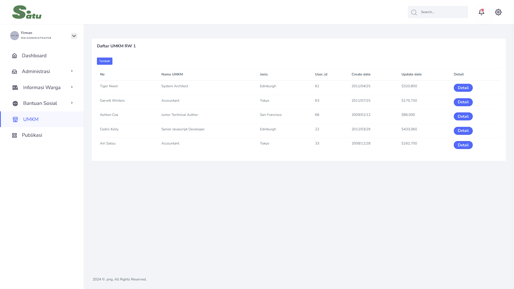
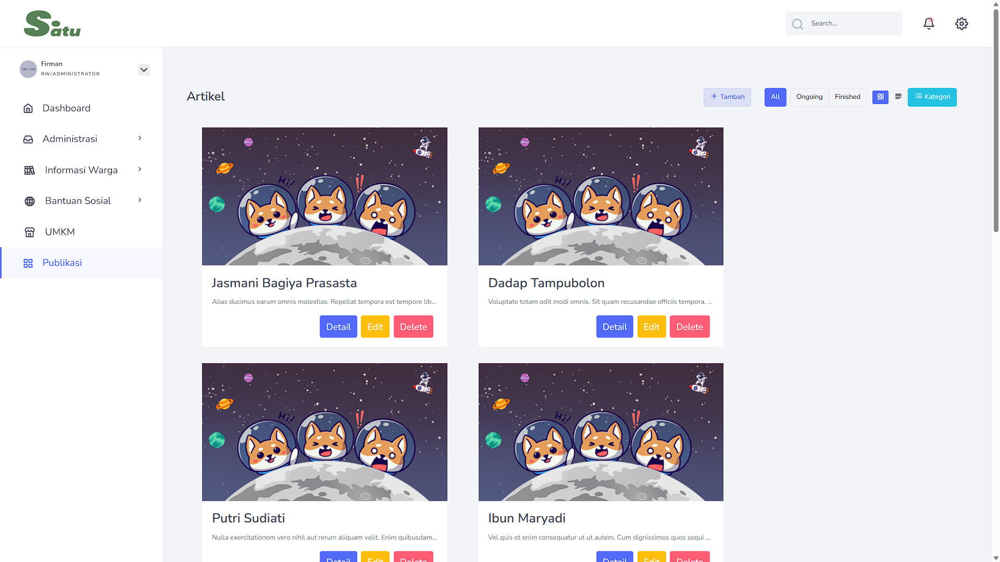

PELAYANAN


+
TRANSPARANSI
KOMUNITAS RW

+ TRANSPARANSIPlatform digital terpadu untuk kemudahan administrasi kependudukan, transparansi kas iuran warga, dan percepatan penyaluran bantuan sosial di tingkat RW.

Sistem pengelolaan data kependudukan dan monitoring warga secara akurat & real-time.

Penentuan prioritas penerima bantuan sosial terukur dengan metode DSS MOORA.

Our Features
Eksplorasi modul sistem informasi SiSatu yang dirancang untuk menjawab kebutuhan warga dan pengurus RW secara menyeluruh.

Dashboard SiSatu menyajikan ringkasan data kependudukan, statistik warga, jumlah rumah, kepala keluarga, jumlah RT, grafik penerima bansos, serta pendataan balita secara visual dan interaktif untuk memudahkan pengambilan keputusan pengurus RW.
Buka Halaman Dashboard →
Mudahkan urusan administratif dan akses data penting di RW Anda. Mengelola buku kas masuk dan keluar, monitoring iuran warga, bukti pembayaran, hingga status pembayaran iuran secara transparan dan akurat.
Buka Halaman Administrasi →
Sistem pendataan kependudukan terpadu dengan pencatatan NIK, identitas kepala keluarga, pekerjaan, status perkawinan, serta persebaran per RT untuk mendukung administrasi kependudukan yang rapi.
Buka Data Kependudukan →Dilengkapi fitur Decision Support System (DSS) untuk membantu penentuan prioritas warga penerima bantuan sosial (Bansos) secara adil, objektif, dan tepat sasaran berdasarkan kriteria terukur.
Buka Halaman Bansos →
Mendukung pertumbuhan ekonomi warga lokal dengan katalog digital usaha mikro, kecil, dan menengah (UMKM) milik warga setempat guna memperluas jangkauan promosi.
Buka Halaman UMKM →
Pusat publikasi berita seputar agenda kegiatan gotong royong, info kesehatan posyandu, dan pengumuman resmi pengurus RW yang dapat diakses langsung oleh warga.
Buka Halaman Publikasi →